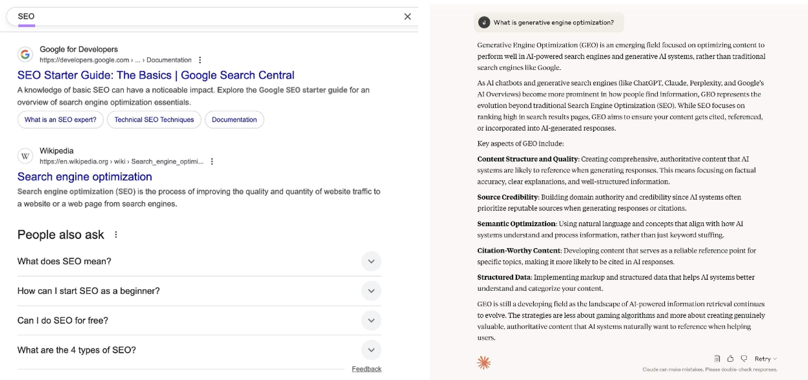
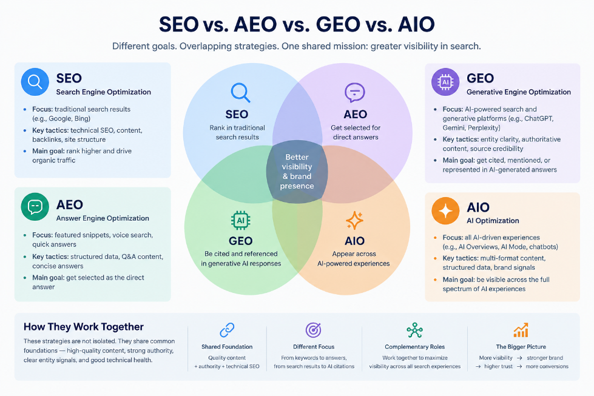

Table of Contents
- What Is SEO?
- What Is GEO?
- SEO vs. GEO: Key Differences
- SEO vs. GEO vs. AEO vs. AIO
- SEO and GEO: Why You Need Both
- How to Optimize for Both
- How to Track SEO vs. GEO Performance
- Summary / Key Takeaways
- FAQ
Introduction
Search behavior is changing.
Traditional search has long been about ranking pages and earning clicks. Today, users can also ask ChatGPT, Perplexity, Gemini, and Google's AI-powered search experiences for synthesized answers.
This shift is changing what "search visibility" means. According to Ahrefs' December 2025 study, AI Overviews were associated with a 58% lower click-through rate for the top-ranking result.
For marketers, this creates a new question: SEO vs. GEO - what is the difference, and do businesses really need both?
The short answer: SEO focuses primarily on visibility in traditional search results, while GEO (Generative Engine Optimization) focuses on how information, brands, and sources are surfaced and represented in generative AI experiences.
They are different, but they are not competing strategies. In many cases, they share the same foundation.
What Is SEO?
SEO, or Search Engine Optimization, is the process of improving your site to help it show higher in search results and drive more organic traffic.
SEO supports search visibility through factors such as crawlability, clear site structure, relevant content, internal linking, and authority signals.
Its common performance metrics include:
- Rankings
- Impressions
- Organic traffic
- Click-through rate
- Conversions
In short, SEO helps make a website discoverable and competitive in traditional search.
What Is GEO?
GEO, or Generative Engine Optimization, is the practice of improving the likelihood that a brand or piece of content will be surfaced, cited, or accurately represented in generative AI responses and AI-powered search experiences.
The key difference is what happens after information is retrieved.
Traditional Search Journey
Query → Search Results → Ranking → Click
Generative Search Journey
Prompt → Retrieval → Synthesis → Answer → Sources / Citations

GEO is not simply “ranking in ChatGPT”. It is about making information easy for AI systems to discover, understand, cite, and accurately represent.
SEO vs. GEO: Key Differences
| Factor | SEO | GEO |
|---|---|---|
| Main goal | Rank web pages | Earn visibility in AI-generated responses |
| Primary surface | Traditional search results | Generative AI and AI-powered search |
| User input | Keywords and search queries | Natural-language prompts and questions |
| Main output | Ranked links | Mentions, citations, sources, recommendations |
| Optimization focus | Pages and websites | Content, entities, and broader web presence |
The most important difference is: pages vs. entities.
SEO revolves around optimizing URLs and earning rankings. GEO depends on whether AI systems can clearly understand your brand, products, and expertise as entities.
Consistency across your website and third-party sources matters more than keyword density.
A second key difference is: rankings vs. representation.
SEO asks: “Can my page rank?”
GEO asks: “Can my information contribute to the answer — and be represented accurately?”
GEO success is not just getting cited. It is also about being described correctly.
SEO vs. GEO vs. AEO vs. AIO: How Are They Related?
As AI search develops, new terminology continues to appear. These concepts overlap, and their definitions are not completely standardized across the industry.
| Term | Primary Focus |
|---|---|
| SEO | Organic search visibility and rankings |
| AEO | Direct answers to user questions |
| GEO | Visibility and representation in generative AI responses |
| AIO | A broader term for optimizing for AI systems |
SEO
Search Engine Optimization focuses on improving a website's visibility in organic search results.
AEO
Answer Engine Optimization focuses on making content suitable for direct-answer experiences, including featured snippets, People Also Ask, voice search, and other answer-oriented formats.
GEO
Generative Engine Optimization focuses on how information, brands, and sources are surfaced and represented within generative AI responses.
AIO
AI Optimization is a broader and less consistently defined term. Some marketers use it as an umbrella term for optimization efforts targeting AI systems.

The practical takeaway is that these are not four completely separate marketing channels.
Their boundaries overlap. The better approach is to build one strong content foundation and adapt it to the search surfaces that matter to your audience.
SEO and GEO: Why You Need Both
GEO does not replace SEO. It builds on many of the same fundamentals.
SEO provides the foundation:
- Crawlability
- Indexability
- Useful content
- Authority
GEO adds another layer:
- AI citation opportunities
- Entity understanding
- Accurate brand representation
The relationship can be understood as:
SEO Foundation + AI Search Adaptation
For most businesses, the answer is: SEO first, then GEO.
This does not mean SEO instead of GEO.
If important pages are not indexed or content does not satisfy search intent, those issues should be solved first.
Once the SEO foundation is stable, businesses can add GEO tactics:
- Answer-first writing
- Entity clarity
- Third-party authority
SEO is the base layer. GEO is the next layer. The key is sequencing, not choosing sides.
How to Optimize for Both
Build the SEO Foundation
For traditional search, focus on:
- Search intent and keyword research
- Helpful, original content
- Title tags and meta descriptions
- Internal linking
- Technical SEO
- Mobile and page experience
- Relevant authority and links
Add an AI Search Optimization Layer
For AI search optimization, focus on five areas.
1. Answer questions directly
Put the answer near the question. A useful structure is:
Question → Answer → Explanation → Evidence
2. Make content easy to extract
Use descriptive headings, short paragraphs, lists, tables, and FAQs. No format guarantees citation, but clear structure helps.
3. Build entity clarity
Keep brand names, product descriptions, and expertise consistent across your website and third-party sources.
4. Publish original, verifiable information
Original research, proprietary data, and first-hand experience are more likely to be cited than generic content.
5. Build authority beyond your website
Industry publications, expert interviews, and reputable third-party sources contribute to AI credibility.
How to Track SEO vs. GEO Performance
Tracking SEO performance is relatively mature. Common metrics include:
- Organic traffic
- Keyword rankings
- Click-through rate
- Conversions
- Engagement metrics
GEO measurement is still developing. There is currently no universal GEO ranking score.
However, businesses can monitor several signals:
AI Mentions and Citations
Check whether AI systems mention your brand, products, or content when answering relevant questions.
Brand Representation
Monitor whether AI-generated descriptions accurately represent your company and expertise.
Referral Traffic
Track traffic from AI-powered platforms when available.
Content Performance
Identify which pages provide information that supports visibility in AI-generated answers.
Search Console and Analytics Data
Google Search Console and analytics platforms remain important for understanding traditional search performance.
As AI search continues to evolve, measurement frameworks will likely become more standardized.
Summary / Key Takeaways
- SEO improves visibility in traditional search engines by helping pages rank and attract organic traffic.
- GEO improves visibility in generative AI experiences by helping brands and information become easier for AI systems to understand and represent.
- SEO and GEO are different strategies, but they share the same foundation: quality content, authority, and clear information.
- Businesses should not treat GEO as a replacement for SEO.
- The strongest approach is building a strong SEO foundation and adding AI search optimization practices.
The future of search is not about choosing between SEO and GEO. It is about creating content that works across both traditional search and AI-driven discovery.
FAQ
Is GEO replacing SEO?
No. GEO is not replacing SEO. Instead, GEO expands search visibility into AI-generated answers and new discovery experiences. SEO remains essential because AI systems still rely heavily on high-quality, accessible, and authoritative information.
What is the difference between SEO, AEO, and GEO?
SEO focuses on improving rankings and organic visibility in traditional search engines. AEO focuses on optimizing content for direct answers, such as featured snippets and question-based search experiences. GEO focuses on improving how brands and information appear inside generative AI responses.
How can I improve GEO?
To improve GEO performance:
- Create clear, helpful content
- Answer specific user questions directly
- Use structured headings and organized information
- Maintain consistent brand information
- Build authority through trustworthy sources
- Publish original insights and research
Do I need GEO if I already do SEO?
Yes, especially if your audience increasingly uses AI-powered search tools. SEO provides the foundation, while GEO helps extend visibility into new search environments.
Is GEO only useful for large companies?
No. Small businesses and personal brands can also benefit from GEO by creating clear expertise signals, answering niche questions, and building trusted online presence.